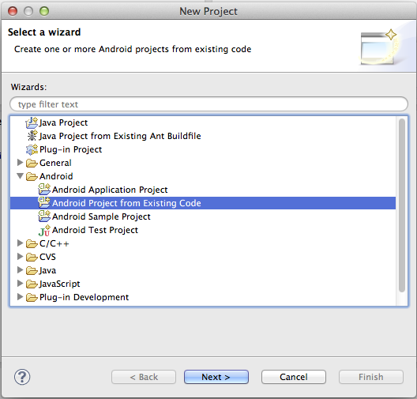
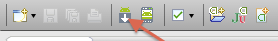

Getting Started with Android
This guide describes how to set up your development environment for Cordova and run a sample application.
1. Minimum Requirements for Development
- Identical to Android Minimum Requirements
1.1 Supported Android Devices
- Android 2.1 (Deprecated May 2013)
- Android 2.2
- Android 2.3
- Android 3.x (Deprecated May 2013)
- Android 4.x
We currently do not support Android 1.x, and we plan to deprecate platforms in the future as they are updated and dip below 5% on the distribution dashboard provided by Google.
2. Install SDK + Cordova
- Download and install Android SDK
- Download the latest copy of PhoneGap and extract its contents. We will be working with the Android directory.
3A. Setup your PATH environment variable on Mac OS
- Open the Terminal program (this is in your Applications/Utilites folder by default).
- Run the following command
touch ~/.bash_profile; open ~/.bash_profile
- This will open the file in the your default text editor.
- You need to add the path to your Android SDK platform-tools and tools directory. In my example I will use "/Development/android-sdk-macosx" as the directory the SDK is installed in. Add the following line:
export PATH=${PATH}:/Development/android-sdk-macosx/platform-tools:/Development/android-sdk-macosx/tools
- Save the file and quit the text editor.
- Execute your .bash_profile to update your PATH.
source ~/.bash_profile
- Now everytime you open the Terminal program you PATH will included the Android SDK.
3B. Setup your PATH environment variable on Windows
- From the Desktop, right-click My Computer and click Properties.
- Click Advanced System Settings link in the left column.
- In the System Properties window click the Environment Variables button.
- Select the PATH variable from the System variables section.
- Select the Edit button.
- You need to add the path to your Android SDK platform-tools and tools directory. In my example I will use "C:\Development\android-sdk-windows" as the directory the SDK is installed in. Append the following text into the text box:
;C:\Development\android-sdk-windows\platform-tools;C:\Development\android-sdk-windows\tools
- Save your edit. Close the Environment Variables dialog.
- Additionally, you may need to include
%JAVA_HOME%\binto your PATH as well. To check to see if this is required, run a command prompt and typejava. If the program can not be found add%JAVA_HOME%\binto the PATH. You may need to specify the full path instead of using the%JAVA_HOME%environment variable. - Finally, you may need to include
%ANT_HOME%\binto your PATH as well. To check to see if this is required, run a command prompt and typeant. If the program can not be found add%ANT_HOME%\binto the PATH. You may need to specify the full path instead of using the%ANT_HOME%environment variable.
4. Setup New Project
- In a terminal window, navigate to the
bindirectory within theandroidsubfolder of the Cordova distribution. -
Type in
./create <project_folder_path> <package_name> <project_name>then press "Enter"<project_folder_path> is the path to your new Cordova Android project <package_name> is the package name, e.g. com.YourCompany.YourAppName <project_name> is the project name, e.g. YourApp (Must not contain spaces and dashes) If you're getting an 'An unexpected error occurred" error, try the command again prefixed with
sudoLaunch Eclipse, and select menu item New Project 
- Select the directory you used for
<project_folder_path> - Click Finish.
If your project has a red X indicating there is a problem follow these additional steps:
- Right click on the project folder.
- In the Properties dialog that is displayed select Android from the navigation pane.
- For the project build target select the highest Android API level you have installed.
- Click OK
- Then from the Project menu bar item select Clean.
- This should correct all the errors in the project.
5A. Deploy to Emulator
- Right click the project and go to Run As > Android Application
- Eclipse will ask you to select an appropriate AVD. If there isn't one, then you'll need to create it.
Note: For a faster experience, use an Intel-based emulator image:
- Open the Android SDK Manager 
- Install one or more
Intel x86 AtomSystem Images as well as theIntel Hardware Accelerated Execution Manager(under Extras). - Run the Intel installer, which has been downloaded to:
extras/intel/Hardware_Accelerated_Execution_Managerwithin your Android SDK - Create a new AVD with the Target set to an Intel image.
- When starting the emulator, ensure there are no error messages about the HAX module failing to load.
5B. Deploy to Device
- Make sure USB debugging is enabled on your device and plug it into your system. Information can be found on the Android Developer Site
- Right click the project and go to Run As > Android Application